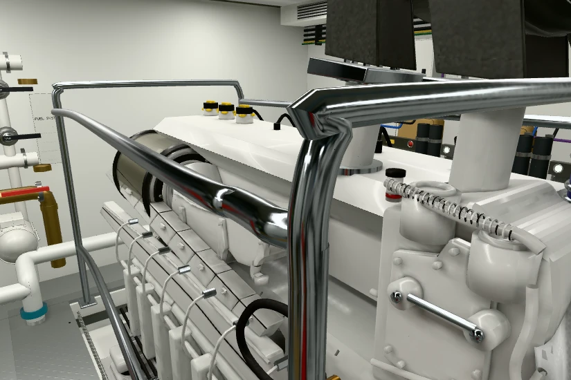
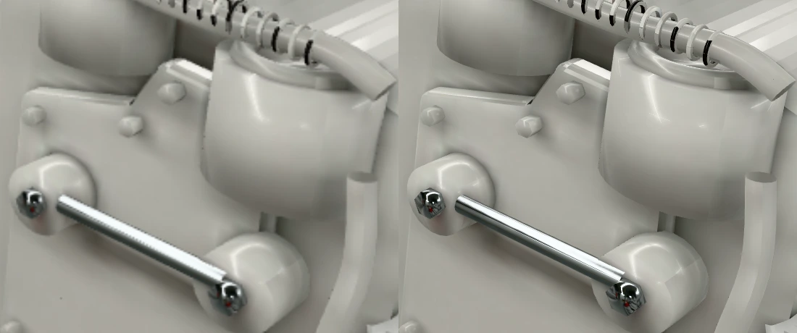

La resolución del cuarto de máquinas ya no baja al caminar, girar o animar equipos. El selector Calidad de imagen ofrece Nitidez, predeterminada, y Rendimiento, una resolución menor que también permanece constante al detenerse.
Abrir el cuarto de máquinas · Reconstrucción del motor derecho

Detalle con iguales coordenadas: antes a la izquierda y después a la derecha. La imagen anterior se amplía bilinealmente para presentar el mismo tamaño.

Se capturó el cuadro nativo al caminar y se volvió a dibujar desde la misma cámara, conservando mallas, materiales e iluminación. En ambos modos las imágenes de movimiento y reposo son idénticas píxel por píxel. Los originales PNG se conservan con sus hashes en el registro de validación; las imágenes de esta página son copias WebP para consulta.
| Modo probado | Movimiento / reposo | Píxeles diferentes |
|---|---|---|
| Nitidez | 1920 × 1280 / igual | 0 |
| Rendimiento | 960 × 640 / igual | 0 |
Buffer fijo de 600 × 400; ocho cuadros caminando, con los dos primeros excluidos de las estadísticas. La lectura síncrona del buffer completo obliga a completar el renderizado. Estas latencias incluyen el renderizado y la lectura a CPU; son una muestra breve por software, no FPS de una GPU real.
| Versión | p50 | p95 |
|---|---|---|
| Antes | 2.657 s | 2.820 s |
| Después | 2.607 s | 2.822 s |
Maquinaria queda fuera del multiplicador automático de calidad y de la restauración de resolución al parar. Una sola política se aplica al dibujar, cambiar el tamaño, entrar en la zona y recuperar WebGL. Se conserva la preferencia durante la sesión; las demás zonas mantienen su política adaptativa.
Nitidez usa el DPR del dispositivo hasta 2. Rendimiento usa un DPR máximo de 1 y hasta 1,5 millones de píxeles tanto caminando como detenido. Los límites de WebGL se respetan en ambos casos.
Se comprueban caminata, giros, cadencias de 30/60/120 Hz, pausas largas, redimensionado, selección de modo, recarga, cambio de zona, pestaña oculta, corte nominal, filtros, memoria y recuperación de WebGL. Las pruebas gráficas utilizan SwiftShader: verifican corrección, no FPS de una GPU real. La resolución completa puede aumentar el coste por cuadro; Rendimiento permite reducirlo explícitamente.
Esta corrección conserva los modelos, materiales, texturas, filtrado anisotrópico y reconstrucciones de ambos motores. No añade precisión documental a la reconstrucción.
Capturas PNG originales y pruebas reproducibles · Resultados, hashes y mediciones · Fuentes del proyecto